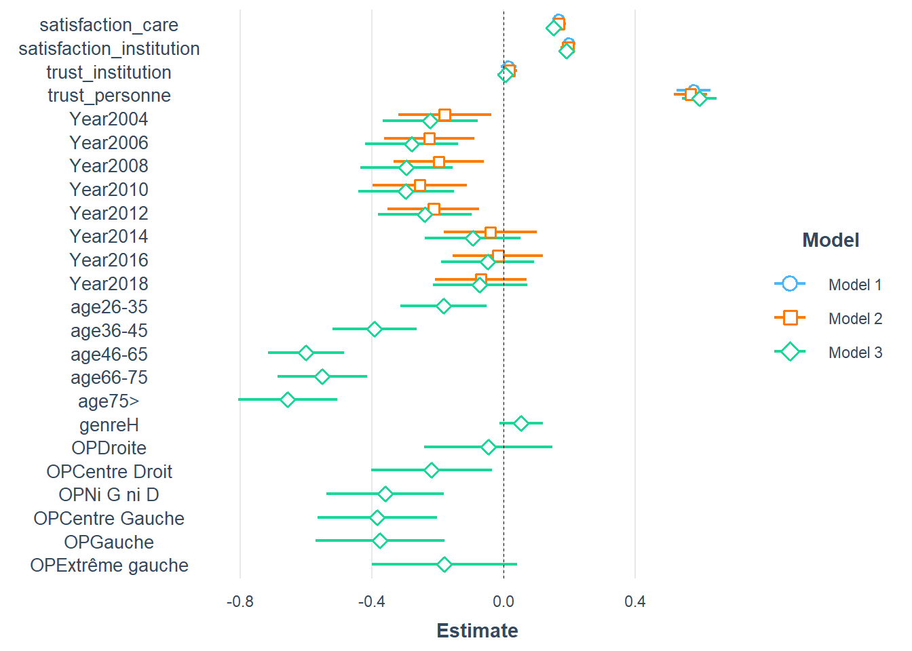

Chapitre 13 11 Les modèles linéaires hiérarchiques (HLM)
Les modèles de panels en économies, ou multi-niveaux en sociologie, sont caractérisés par le fait que les données sont un empilement de différents échantillons correspondant à une stratification.
13.1 en guise d’introduction
L’exemple de la performance scolaire va nous éclairer. Supposons que l’on veuille établir l’effet d’une mesure d’aptitude intellectuelle (par le exemple le score de QI) sur les notes obtenues. On va mesurer cette relation en recueillant les données deux classes et dans deux matières. La classe A est calme, la classe B est agitée, les matières sont les maths et le français.
a=.1
foo_MC<-as.data.frame(rnorm(20, mean=12, sd=10))%>%
rename(QI=1) %>% group_by(row_number()) %>%
mutate(e=-5+10*runif(1))%>% ungroup() %>%
mutate(Perf=a*QI-3+1+e,matiere="Math", classe="Calme")
foo_MA<-as.data.frame(rnorm(20, mean=12, sd=10))%>%
rename(QI=1) %>% group_by(row_number()) %>%
mutate(e=-5+10*runif(1))%>% ungroup() %>%
mutate(Perf=a*QI-3-3+e,matiere="Math", classe="Agité")
foo_FC<-as.data.frame(rnorm(20, mean=12, sd=10))%>%
rename(QI=1) %>% group_by(row_number()) %>%
mutate(e=-5+10*runif(1))%>% ungroup() %>%
mutate(Perf=a*QI+2+1+e,matiere="Français", classe="Calme")
foo_FA<-as.data.frame(rnorm(20, mean=12, sd=10))%>%
rename(QI=1) %>% group_by(row_number()) %>%
mutate(e=-5+10*runif(1))%>% ungroup() %>%
mutate(Perf=a*QI+2-4+1+e,matiere="Français", classe="Agité")
foo<-rbind(foo_MA, foo_MC, foo_FA,foo_FC)
r =round(cor(foo$QI, foo$Perf),2)
ggplot(foo, aes(x=QI, y=Perf))+
geom_point()+geom_smooth(method="lm")+
labs(title=paste("Corrélation :",r))ggplot(foo, aes(x=QI, y=Perf, shape=matiere, color=classe))+
geom_point()+geom_smooth(method="lm")+facet_grid(matiere~classe)+
labs(title=paste("Corrélation :",r))fit01<-lm(Perf~QI, data=foo)
fit02<-lm(Perf~QI+matiere+classe, data=foo)
fit03<-lm(Perf~QI+matiere*classe, data=foo)
export_summs(fit01,fit02, fit03, number_format = "%.3g")| Model 1 | Model 2 | Model 3 | |
|---|---|---|---|
| (Intercept) | -1.85 * | 0.0708 | -0.702 |
| (0.814) | (0.691) | (0.706) | |
| QI | 0.134 ** | 0.0574 | 0.0543 |
| (0.0483) | (0.0304) | (0.0289) | |
| matiereMath | -5.61 *** | -3.98 *** | |
| (0.592) | (0.781) | ||
| classeCalme | 3.87 *** | 5.51 *** | |
| (0.575) | (0.774) | ||
| matiereMath:classeCalme | -3.29 ** | ||
| (1.09) | |||
| N | 80 | 80 | 80 |
| R2 | 0.0898 | 0.67 | 0.706 |
| *** p < 0.001; ** p < 0.01; * p < 0.05. | |||
Dans ce petit exemple, les niveaux sont peu nombreux. On pourrait imaginer qu’ils soient bien plus nombreux, par exemple en réalisant l’enquête sur des dizaines de classes pour lesquelles le degré d’agitation est variable et se distribue certainement de manière normale. Ne tenons plus en compte la matière pour le moment. On ne va prendre que la moyenne des maths.
On peut écrire le modèle où \(\beta_{k}\) représente le terme constant de chacune des k classes.
\[ y_{ik}=\beta_{k}+\beta_{1}Aptitude_{i}+\epsilon_{ik} \]
en supposant que les \(\beta_{k}\) se distribue de manière normale avec une moyenne \(\overline{\beta}\) et une variance \(\mu_{k}\), on peut réécrire l’équation de la manière suivante
\[y_{ik}=\overline{\beta}+\beta_{1}Aptitude_{i}+\mu_{k}+\epsilon_{ik} \]
C’est un modèle à composantes d’erreur où \(\mu_{k}\) représente l’effet de la classe.
13.2 Une application
voir données ESS
df <- read_csv("Data/ESS-Data-Wizard-subset-2022-10-06.csv")
df$Year<-2000
#recodage des variables independantes
df$Year[df$essround==1]<-2002
df$Year[df$essround==2]<-2004
df$Year[df$essround==3]<-2006
df$Year[df$essround==4]<-2008
df$Year[df$essround==5]<-2010
df$Year[df$essround==6]<-2012
df$Year[df$essround==7]<-2014
df$Year[df$essround==8]<-2016
df$Year[df$essround==9]<-2018
df$Year<-as.factor(df$Year)
df$OP<-" "
#ggplot(df,aes(x=lrscale))+geom_histogram()
df$OP[df$lrscale==0] <- "Extrême gauche"
df$OP[df$lrscale==1] <- "Gauche"
df$OP[df$lrscale==2] <- "Gauche"
df$OP[df$lrscale==3] <- "Centre Gauche"
df$OP[df$lrscale==4] <- "Centre Gauche"
df$OP[df$lrscale==5] <- "Ni G ni D"
df$OP[df$lrscale==6] <- "Centre Droit"
df$OP[df$lrscale==7] <- "Centre Droit"
df$OP[df$lrscale==8] <- "Droite"
df$OP[df$lrscale==9] <- "Droite"
df$OP[df$lrscale==10] <- "Extrême droite"
#la ligne suivante est pour ordonner les modalités de la variables
df$OP<-factor(df$OP,levels=c("Extrême droite","Droite","Centre Droit","Ni G ni D","Centre Gauche","Gauche","Extrême gauche"))
df$genre<-" "
df$genre[df$gndr==1]<-"H"
df$genre[df$gndr==2]<-"F"
df$age<-" "
df$age[df$agea<26]<-"25<"
df$age[df$agea>25 & df$agea<36]<-"26-35"
df$age[df$agea>35 & df$agea<46]<-"36-45"
df$age[df$agea>45 & df$agea<66]<-"46-65"
df$age[df$agea>65 & df$agea<76]<-"66-75"
df$age[df$agea>75]<-"75>"
df$age<-factor(df$age,levels=c("25<","26-35","36-45","46-65","66-75", "75>"))
df_confiance<-df%>%
dplyr::select(trstep, trstlgl,trstplc,trstplt,trstprl,trstprt,trstun,pplfair,pplhlp, ppltrst) %>%
mutate(trstep=ifelse(trstep==77 |trstep==88| trstep==66,NA,trstep),
trstlgl=ifelse(trstlgl==77 |trstlgl==88| trstlgl==66,NA,trstlgl),
trstplc=ifelse(trstplc==77 |trstplc==88| trstplc==66,NA,trstplc),
trstplt=ifelse(trstplt==77 |trstplt==88| trstplt==66,NA,trstplt),
trstprt=ifelse(trstprt==77 |trstprt==88| trstprt==66,NA,trstprt),
trstun=ifelse(trstun==77 |trstun==88| trstun==66,NA,trstun),
trstprl=ifelse(trstprl==77 |trstprl==88| trstprl==66,NA,trstprl),
pplfair=ifelse(pplfair==77 |pplfair==88| pplfair==66,NA,pplfair),
pplhlp=ifelse(pplhlp==77 |pplhlp==88| pplhlp==66,NA,pplhlp),
ppltrst=ifelse(ppltrst==77 |ppltrst==88| ppltrst==66,NA,ppltrst),
trust_institution= (trstep+trstlgl+trstplc+trstplt+trstprl+trstprt+trstun)/7,
trust_personne= (pplfair+pplhlp+ppltrst)/7
)
df_satisfaction<-df%>%
dplyr::select(stfeco,stfedu,stfgov, stfhlth, stflife,stfmjob, happy) %>%
mutate(stfeco=ifelse(stfeco==77 |stfeco==88| stfeco==66,NA,stfeco),
stfedu=ifelse(stfedu==77 |stfedu==88 | stfedu==66,NA,stfedu),
stfgov=ifelse(stfgov==77 |stfgov==88 | stfgov==66, NA, stfgov),
stfhlth=ifelse(stfhlth==77 |stfhlth==88|stfhlth==66,NA,stfhlth),
stflife=ifelse(stflife==77 |stflife==88|stflife==66,NA,stflife),
stfmjob=ifelse(stfmjob==77 |stfmjob==88|stfmjob==66,NA,stfmjob),
satisfaction_vie=(stflife+happy)/2, #à examiner
satisfaction_institution=(stfeco+stfgov)/2,
satisfaction_care=(stfhlth+stfedu)/2
)
df_sample<-df%>%
dplyr::select(Year, age, OP, genre)
df<-cbind(df_sample, df_satisfaction, df_confiance)library(ggcorrplot)
foo<-cbind(df_satisfaction, df_confiance) %>%
dplyr::select(-stfmjob)%>%
drop_na()
r<-cor(foo)
ggcorrplot(r, hc.order = TRUE, type = "lower",
outline.col = "white",
colors = c("#6D9EC1", "white", "#E46726"), lab=TRUE, lab_size=2)
res.pca <- PCA(foo, scale.unit = TRUE, ncp = 3, graph = TRUE)

fviz_eig(res.pca, addlabels = TRUE, ylim = c(0, 50))fviz_pca_var(res.pca, col.var = "cos2",
gradient.cols = c("#00AFBB", "#E7B800", "#FC4E07"),
repel = TRUE # Avoid text overlapping
)foo<-df%>%
dplyr::select(satisfaction_vie, satisfaction_care, satisfaction_institution, trust_institution, trust_personne, Year)%>%
drop_na()
fit0<-lm(satisfaction_vie~satisfaction_care+satisfaction_institution+trust_institution+trust_personne, data=df)
fit1<-lm(satisfaction_vie~satisfaction_care+satisfaction_institution+trust_institution+trust_personne+Year, data=df)
fit2<-lm(satisfaction_vie~age+genre+OP+satisfaction_care+satisfaction_institution+trust_institution+trust_personne+Year, data=df)
export_summs(fit0, fit1,fit2, digits=3)| Model 1 | Model 2 | Model 3 | |
|---|---|---|---|
| (Intercept) | 3.910 *** | 4.060 *** | 4.893 *** |
| (0.067) | (0.084) | (0.132) | |
| satisfaction_care | 0.168 *** | 0.168 *** | 0.153 *** |
| (0.010) | (0.010) | (0.011) | |
| satisfaction_institution | 0.197 *** | 0.195 *** | 0.191 *** |
| (0.011) | (0.011) | (0.011) | |
| trust_institution | 0.015 | 0.017 | 0.006 |
| (0.012) | (0.012) | (0.013) | |
| trust_personne | 0.577 *** | 0.567 *** | 0.595 *** |
| (0.026) | (0.026) | (0.027) | |
| Year2004 | -0.179 * | -0.223 ** | |
| (0.072) | (0.073) | ||
| Year2006 | -0.226 ** | -0.279 *** | |
| (0.070) | (0.072) | ||
| Year2008 | -0.197 ** | -0.295 *** | |
| (0.070) | (0.072) | ||
| Year2010 | -0.255 *** | -0.296 *** | |
| (0.073) | (0.074) | ||
| Year2012 | -0.213 ** | -0.239 *** | |
| (0.071) | (0.072) | ||
| Year2014 | -0.040 | -0.094 | |
| (0.073) | (0.074) | ||
| Year2016 | -0.017 | -0.048 | |
| (0.070) | (0.072) | ||
| Year2018 | -0.069 | -0.071 | |
| (0.071) | (0.073) | ||
| age26-35 | -0.182 ** | ||
| (0.067) | |||
| age36-45 | -0.392 *** | ||
| (0.065) | |||
| age46-65 | -0.599 *** | ||
| (0.059) | |||
| age66-75 | -0.550 *** | ||
| (0.069) | |||
| age75> | -0.655 *** | ||
| (0.077) | |||
| genreH | 0.053 | ||
| (0.033) | |||
| OPDroite | -0.046 | ||
| (0.099) | |||
| OPCentre Droit | -0.219 * | ||
| (0.094) | |||
| OPNi G ni D | -0.360 *** | ||
| (0.091) | |||
| OPCentre Gauche | -0.383 *** | ||
| (0.093) | |||
| OPGauche | -0.376 *** | ||
| (0.100) | |||
| OPExtrême gauche | -0.179 | ||
| (0.112) | |||
| N | 15925 | 15925 | 15097 |
| R2 | 0.135 | 0.137 | 0.146 |
| *** p < 0.001; ** p < 0.01; * p < 0.05. | |||
plot_summs(fit0, fit1,fit2)
fit3<-lmer(satisfaction_vie~satisfaction_care+satisfaction_institution+trust_institution+trust_personne+(1|Year)+(1|age)+(1|OP)+(1|genre),data = df )
summary(fit3)## Linear mixed model fit by REML ['lmerMod']
## Formula: satisfaction_vie ~ satisfaction_care + satisfaction_institution +
## trust_institution + trust_personne + (1 | Year) + (1 | age) +
## (1 | OP) + (1 | genre)
## Data: df
##
## REML criterion at convergence: 64306.6
##
## Scaled residuals:
## Min 1Q Median 3Q Max
## -3.6734 -0.4987 0.0449 0.5224 20.0332
##
## Random effects:
## Groups Name Variance Std.Dev.
## Year (Intercept) 0.011293 0.10627
## OP (Intercept) 0.020748 0.14404
## age (Intercept) 0.062720 0.25044
## genre (Intercept) 0.000951 0.03084
## Residual 4.123666 2.03068
## Number of obs: 15097, groups: Year, 9; OP, 7; age, 6; genre, 2
##
## Fixed effects:
## Estimate Std. Error t value
## (Intercept) 4.113609 0.142579 28.851
## satisfaction_care 0.153794 0.010719 14.348
## satisfaction_institution 0.191973 0.011356 16.905
## trust_institution 0.005106 0.012737 0.401
## trust_personne 0.594821 0.026775 22.215
##
## Correlation of Fixed Effects:
## (Intr) stsfctn_c stsfctn_n trst_n
## satsfctn_cr -0.243
## stsfctn_nst 0.027 -0.226
## trst_nstttn -0.078 -0.225 -0.439
## trust_prsnn -0.260 -0.057 -0.101 -0.24213.3 Sem avec Lavaan
On reste sur le jeu de données précédent